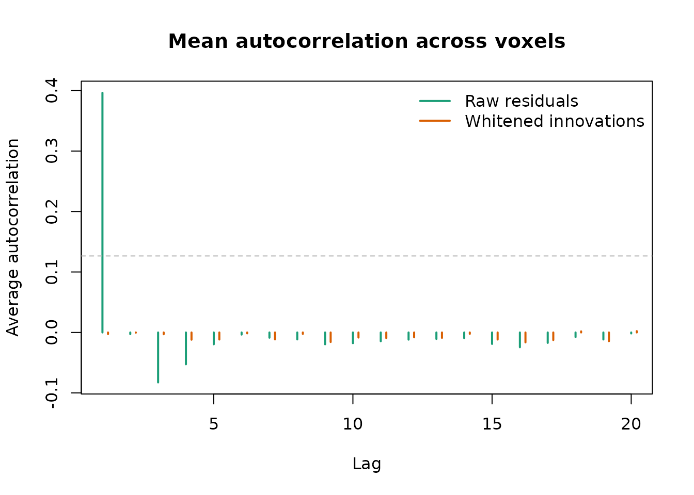
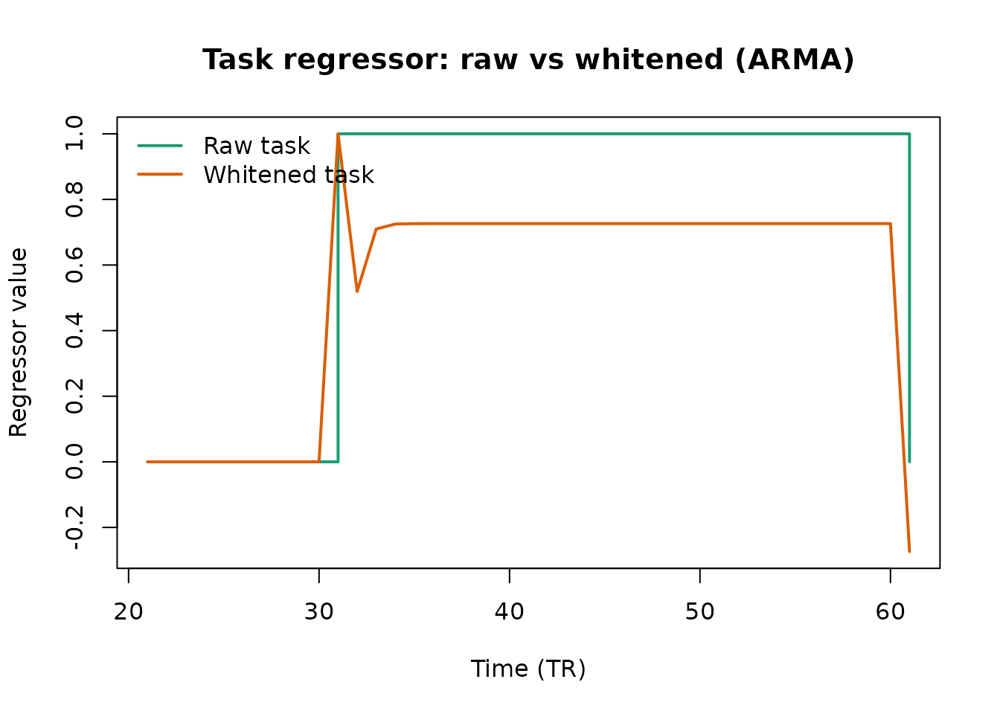

Getting Started with fmriAR
fmriAR Team
2026-10-09
Source:vignettes/fmriAR-introduction.Rmd
fmriAR-introduction.RmdOverview
fmriAR provides lightweight tools for estimating
autoregressive (AR) or autoregressive–moving-average (ARMA) noise models
from fMRI residuals and applying matched prewhitening to both design
matrices and voxel-wise data. The C++ core keeps large-scale whitening
fast, while the R interface stays compact and flexible.
This vignette walks through a typical workflow. We start by fitting an AR model to residuals from an initial OLS regression, then apply the resulting run-aware whitening plan to both the design matrix and the voxel data. With the innovations in hand we check that low-lag autocorrelation has been suppressed. We then cover censored (scrubbed) frames, correcting the bias that the GLM projection puts into residual autocorrelation, parcel pooling with multiscale shrinkage, ARMA models with automatic order selection, AFNI-style restricted models, and standard errors.
Simulating data for the examples
To make the examples reproducible, we simulate a modest fMRI-style dataset with two runs, a small design matrix, and voxel-specific AR(2) noise.
library(fmriAR)
set.seed(42)
n_time <- 240
n_vox <- 60
runs <- rep(1:2, each = n_time / 2)
# Design matrix: intercept + task regressor
X <- cbind(
intercept = 1,
task = rep(c(rep(0, 30), rep(1, 30)), length.out = n_time)
)
# Generate voxel time-series with AR(2) noise
phi_true <- matrix(0, nrow = n_vox, ncol = 2)
phi_true[, 1] <- 0.5 + rnorm(n_vox, sd = 0.05)
phi_true[, 2] <- -0.2 + rnorm(n_vox, sd = 0.05)
Y <- matrix(0, n_time, n_vox)
innov <- matrix(rnorm(n_time * n_vox, sd = 1), n_time, n_vox)
for (v in seq_len(n_vox)) {
for (t in seq_len(n_time)) {
ar_part <- 0
if (t > 1) ar_part <- ar_part + phi_true[v, 1] * Y[t - 1, v]
if (t > 2) ar_part <- ar_part + phi_true[v, 2] * Y[t - 2, v]
Y[t, v] <- ar_part + innov[t, v]
}
}
# Add task signal to half the voxels
beta <- c(0, 1.5)
Y_signal <- drop(X %*% beta)
Y[, 1:30] <- sweep(Y[, 1:30], 1, Y_signal, "+")
# Residuals from initial OLS fit
coeff_ols <- qr.solve(X, Y)
resid <- Y - X %*% coeff_olsFitting an AR model
The primary entry point is fit_noise(). When
method = "ar" and p = "auto", the function
selects the AR order per run using BIC (searching up to
p_max), then enforces stationarity. An explicit order such
as p = 2 is used as given.
exact_first = "ar1" (the default; the name is
historical) whitens the start of every run, and every segment after a
censored frame, with the exact stationary initialisation of the fitted
model. For any AR or ARMA order this makes the whitening identical to
exact GLS within each segment; for an AR(1) it reduces to the familiar
sqrt(1 - phi^2) scaling of the first sample.
plan_ar <- fit_noise(
resid,
runs = runs,
method = "ar",
p = "auto",
p_max = 6,
exact_first = "ar1",
pooling = "run"
)
plan_ar
# fmriAR whitening plan
# Method: AR
# Orders: p = 2, q = 0
# Pooling: run
# Runs: 2 (1, 2)
# Segment start: exact stationary
# Coefficients:
# 1: phi = 0.485, -0.193
# 2: phi = 0.482, -0.196The returned fmriAR_plan holds run-specific AR
coefficients and metadata about the estimation procedure.
Whitening design and data matrices
whiten_apply() takes the plan, design matrix, and
observed data and returns whitened versions that can be used in GLS
estimation or downstream analyses.
whitened <- whiten_apply(plan_ar, X, Y, runs = runs)
str(whitened)
# List of 2
# $ X: num [1:240, 1:2] 0.896 0.582 0.708 0.708 0.708 ...
# ..- attr(*, "dimnames")=List of 2
# .. ..$ : NULL
# .. ..$ : chr [1:2] "intercept" "task"
# $ Y: num [1:240, 1:60] -1.3388 -1.6799 -0.0306 -1.0101 -0.0617 ...By default the function returns whitened X and
Y; your inputs are never modified. Whitening runs in
parallel over voxels when the package was built with OpenMP; cap the
thread count with options(fmriAR.max_threads = k). You can
compute GLS coefficients with a single linear solve:
Xw <- whitened$X
Yw <- whitened$Y
beta_gls <- qr.solve(Xw, Yw[, 1:5])
beta_gls
# [,1] [,2] [,3] [,4] [,5]
# intercept -0.1728998 0.03706529 -0.038110 0.08369211 0.03793566
# task 1.6604451 1.38204780 1.178319 1.46310266 1.53959638Inspecting innovations
The whitened residuals (innovations) should look close to white
noise. acorr_diagnostics() computes each voxel’s
autocorrelation, centring each run separately and never pairing frames
across a run boundary, and then averages across voxels
(aggregate = "none" returns the per-voxel matrix
instead).
innov_var <- Yw - Xw %*% qr.solve(Xw, Yw)
ac_white <- acorr_diagnostics(innov_var, runs = runs, max_lag = 20)
ac_raw <- acorr_diagnostics(resid, runs = runs, max_lag = 20)
# Mean absolute autocorrelation over lags 1-5, before and after whitening
c(raw = mean(abs(ac_raw$acf[1:5])), whitened = mean(abs(ac_white$acf[1:5])))
# raw whitened
# 0.110797487 0.005921328The raw residuals carry strong low-lag autocorrelation; after
whitening it is within the sampling noise band
(ac_white$ci).
lags <- ac_raw$lags
ylim <- range(c(ac_raw$acf, ac_white$acf, 0))
plot(lags, ac_raw$acf, type = "h", lwd = 2, col = "#1b9e77",
ylim = ylim, xlab = "Lag", ylab = "Average autocorrelation",
main = "Mean autocorrelation across voxels")
lines(lags + 0.2, ac_white$acf, type = "h", lwd = 2, col = "#d95f02")
abline(h = c(-1, 1) * ac_white$ci, col = "grey70", lty = 2)
legend("topright",
legend = c("Raw residuals", "Whitened innovations"),
col = c("#1b9e77", "#d95f02"),
lwd = 2, bty = "n")
Average autocorrelation across voxels before and after whitening
Censored (scrubbed) frames
Motion-corrupted frames can be passed as censor, either
as 1-based indices or as a logical mask with one entry per timepoint.
Censored frames are dropped when the noise model is estimated: no lag
product spans a gap, and the mean is still removed per run. When
whitening, the filter restarts (with the exact stationary start) at the
first frame after each censored one.
scrub <- rep(FALSE, n_time)
scrub[c(50:52, 170)] <- TRUE
plan_cens <- fit_noise(resid, runs = runs, p = "auto", censor = scrub)
w_cens <- whiten_apply(plan_cens, X, Y, runs = runs)
w_cens$censor
# [1] 50 51 52 170whiten_apply() reuses the plan’s censor set when it is
applied to data of the length it was fitted on, as here; pass
censor explicitly for other data. The censored rows are
still present in the output (filtered from the preceding history), and
the result lists them in censor so they can be dropped
before the final fit:
Correcting residual-projection bias
Autocorrelation estimated from GLM residuals is biased towards zero,
because the residuals are M y for the residual-forming
projection M = I - X (X'X)^-1 X', and so carry
M Sigma M rather than Sigma. The bias grows
with the number of regressors, and slow drift regressors make it larger
still. Our two-column design barely biases anything, so here we add the
usual per-run intercepts and low-frequency (DCT) drift terms. Passing
the design that produced the residuals undoes the bias:
dct <- function(L, k) sapply(seq_len(k), function(j) cos(pi * j * (seq_len(L) - 0.5) / L))
drift <- rbind(cbind(dct(120, 4), matrix(0, 120, 4)),
cbind(matrix(0, 120, 4), dct(120, 4)))
X_full <- cbind(X, run2 = as.numeric(runs == 2), drift)
resid_full <- Y - X_full %*% qr.solve(X_full, Y)
plan_raw <- fit_noise(resid_full, runs = runs, p = 2)
plan_cor <- fit_noise(resid_full, runs = runs, p = 2, design = X_full)
round(rbind(uncorrected = plan_raw$phi[[1]],
corrected = plan_cor$phi[[1]],
truth = colMeans(phi_true)), 3)
# [,1] [,2]
# uncorrected 0.450 -0.226
# corrected 0.476 -0.203
# truth 0.499 -0.196The correction works for every pooling mode with
method = "ar", including pooling = "parcel",
and with censoring. It requires residuals that really are OLS residuals
from design (a numerical orthogonality check rejects
obvious mismatches). When many datasets share one design, build the
correction once with acvf_bias_matrix() and pass it as
acvf_correction. noise_acvf(resid, design = X)
returns the corrected autocovariance itself.
Parcel pooling and multiscale shrinkage
When per-voxel residuals are noisy, you can pool information across parcels. The example below constructs synthetic parcels and uses the multiscale PACF-weighted shrinkage.
Under the hood, fit_noise(..., pooling = "parcel")
estimates each parcel’s AR model from the autocovariances of its voxels,
pooled across those voxels with run-aware, censor-aware lag products. It
does not average the voxels into a parcel-mean series first: that
series’ autocorrelation is dominated by whatever the voxels share and
would not describe the voxel-level noise being whitened. With
parcel_sets, this is done at each spatial resolution
(fine/medium/coarse), and each fine parcel’s coefficients are then
shrunk toward its parents by combining either partial autocorrelations
(“pacf_weighted”) or autocovariance functions (“acvf_pooled”). The
weights depend on parcel size, the relative dispersion of voxel
variances (a unit-free measure, so rescaling the data does not change
the result), and the number of runs. Larger or more homogeneous parcels
therefore lend more stability to their descendants, and every final
per-parcel filter is stationary.
parcels_fine <- rep(1:12, each = n_vox / 12)
parcels_medium <- rep(1:6, each = n_vox / 6)
parcels_coarse <- rep(1:3, each = n_vox / 3)
plan_parcel <- fit_noise(
resid,
runs = runs,
method = "ar",
p = "auto",
p_max = 6,
pooling = "parcel",
parcels = parcels_fine,
parcel_sets = list(
fine = parcels_fine,
medium = parcels_medium,
coarse = parcels_coarse
),
multiscale = "pacf_weighted"
)
plan_parcel$order
# p q
# 2 0When parcel pooling is requested, whiten_apply() returns
X_by, a list of whitened design matrices per parcel, along
with the voxel-wise Y innovations. Each
X_by[[pid]] has the same dimensions as the original
X; parcels that share a filter share one whitened
design.
whitened_parcel <- whiten_apply(plan_parcel, X, Y, runs = runs, parcels = parcels_fine)
length(whitened_parcel$X_by)
# [1] 12Parcel coefficients differ from one another, which is the point of parcel pooling: each parcel gets a filter matched to its own noise.
Fitting ARMA models
Some datasets require ARMA models to capture remaining MA structure.
The workflow mirrors the AR case but sets
method = "arma".
ARMA models are estimated by the Hannan–Rissanen procedure, pooled
over voxels: every voxel is treated as a replicate series sharing the
coefficients, so the estimate reflects voxel-level noise rather than the
voxel-mean series. All lags stay inside contiguous run/censor segments.
hr_iter adds refinement iterations, and the plan’s
sigma2 is the voxel-scale innovation variance.
plan_arma <- fit_noise(
resid,
runs = runs,
method = "arma",
p = 2,
q = 1,
hr_iter = 1
)
plan_arma$order
# p q
# 2 1Orders can be chosen automatically: p = "auto" and
q = "auto" search 0:p_max and
0:q_max by BIC on the pooled regression. Because voxels
that share fluctuations carry less independent evidence than their count
suggests, the BIC sample size uses the effective number of independent
voxels.
plan_arma_auto <- fit_noise(resid, runs = runs, method = "arma",
p = "auto", q = "auto", q_max = 2)
plan_arma_auto$order
# p q
# 2 0Here the noise is AR(2), and the search finds no MA component.
ARMA whitening uses the same whiten_apply()
interface.
whitened_arma <- whiten_apply(plan_arma, X, Y, runs = runs)
# The task regressor is 0 for the first 30 TRs in this simulation,
# so showing the first 5 rows hides the effect on that column.
# Instead, inspect rows around the first task onset (t = 31)
# to see how the step regressor is filtered.
whitened_arma$X[28:36, ]
# intercept task
# [1,] 0.7261956 0.0000000
# [2,] 0.7261956 0.0000000
# [3,] 0.7261956 0.0000000
# [4,] 0.7261956 1.0000000
# [5,] 0.7261956 0.5191500
# [6,] 0.7261956 0.7096813
# [7,] 0.7261956 0.7248784
# [8,] 0.7261956 0.7260905
# [9,] 0.7261956 0.7261872
# Visualize how whitening transforms the task step regressor around its first onset
task_raw <- X[, "task"]
task_white <- whitened_arma$X[, "task"]
onset <- which(task_raw > 0)[1]
win <- max(1, onset - 10):min(n_time, onset + 30)
ylim <- range(c(task_raw[win], task_white[win]))
plot(win, task_raw[win], type = "s", lwd = 2, col = "#1b9e77",
ylim = ylim, xlab = "Time (TR)", ylab = "Regressor value",
main = "Task regressor: raw vs whitened (ARMA)")
lines(win, task_white[win], lwd = 2, col = "#d95f02")
legend("topleft", legend = c("Raw task", "Whitened task"),
col = c("#1b9e77", "#d95f02"), lwd = 2, bty = "n")
Task regressor around onset: raw vs whitened (ARMA)
AFNI-style restricted AR filters
If you need to replicate AFNI’s “restricted ARMA” family—real +
complex AR roots with optional additive white noise—fmriAR
exposes a stable wrapper via its compatibility interface: use
compat$afni_restricted_plan() to construct matching
whitening plans. This returns the same fmriAR_plan objects
used elsewhere while keeping the main public API minimal. Alternatively,
you can call the exported top-level helper
afni_restricted_plan() directly; the compat wrapper
delegates to it.
The helper expects the AFNI root parameterisation (a real root
a, complex pairs defined by radius/angle, and an optional
MA(1) refinement) and can operate globally or per parcel. Because the
interface mirrors AFNI’s internals, it is a convenient bridge when
comparing pipelines or validating fmriAR against established AFNI
analyses.
# AFNI-style AR(3): a real root and one complex pair (radius r1, angle t1)
roots <- list(a = 0.6, r1 = 0.7, t1 = pi / 6)
plan_afni <- compat$afni_restricted_plan(
resid = resid,
runs = runs,
parcels = NULL,
p = 3L,
roots = roots,
estimate_ma1 = TRUE
)
plan_afni$order
# p q
# 3 1
# Apply whitening just like any other plan
whitened_afni <- whiten_apply(plan_afni, X, Y, runs = runs)As in AFNI, a, r1 and r2 must
be non-negative (values above 0.95 are clamped) and angles are clamped
to [0, pi]. AFNI models additive white noise through
vrt = s^2 / (s^2 + w^2), the share of variance carried by
the AR signal. With estimate_ma1 = FALSE, a
vrt below 1 produces the exact ARMA(p, p) equivalent of
AR(p) plus white noise, whose autocorrelation is vrt times
the AR autocorrelation at every non-zero lag. With
estimate_ma1 = TRUE, an MA(1) term is instead estimated
from the AR-filtered voxels, and vrt is ignored.
plan_afni_vrt <- afni_restricted_plan(resid, runs = runs, p = 3L,
roots = c(roots, vrt = 0.8),
estimate_ma1 = FALSE)
plan_afni_vrt$order
# p q
# 3 3Set estimate_ma1 = FALSE and leave vrt at 1
to obtain the pure AR filter implied by the AFNI roots, or provide a
list of root specifications keyed by parcel ID to drive parcel-specific
filters that mirror AFNI’s voxel grouping.
Diagnostics and sandwich estimates
The package includes helpers for quick diagnostics and variance estimation:
# Autocorrelation diagnostics for whitened residuals (innovations), per run
acorr <- acorr_diagnostics(innov_var[, 1:3], runs = runs, max_lag = 5)
round(acorr$acf, 3)
# [1] 0.005 -0.023 -0.031 0.023 0.043
# Standard errors from the whitened fit. "iid" assumes the whitening worked;
# "hac" (Newey-West within runs) stays valid if some autocorrelation remains.
se_iid <- sandwich_from_whitened_resid(whitened$X, whitened$Y[, 1:3])
se_hac <- sandwich_from_whitened_resid(whitened$X, whitened$Y[, 1:3],
type = "hac", runs = runs)
# Rows of $se follow the columns of X; row 2 is the task effect
rbind(iid = se_iid$se[2, ], hac = se_hac$se[2, ])
# [,1] [,2] [,3]
# iid 0.1628794 0.1838375 0.1711692
# hac 0.1424682 0.1837681 0.1684552sandwich_from_whitened_resid() also accepts
rank-deficient designs: non-estimable coefficients get NA
standard errors, as in lm().
Next steps
- Explore the test suite in
tests/testthatfor additional usage patterns, including multiscale pooling and ARMA recovery checks. - Inspect the exported
fmriAR_planobject withcompat$plan_info(plan_ar)to see per-run or per-parcel coefficients. - Combine
whiten_apply()with GLS modelling packages to build end-to-end prewhitened analyses.
For production usage, consider benchmarking with your acquisition
parameters. tools/validation/accuracy_benchmark.R in the
source repository runs seeded accuracy, calibration and timing scenarios
against any installed version of the package.